| 日付 | 2022年4月2日（土） - 2022年4月3日（日） |
|---|---|
| メンバー | 家族（長女・11歳、長男・8歳、両親、姉一家） |
| アクセス | 車 |
両親と姉一家と親族旅行に行く。
正月に父親が旅行に行きたいと言っていて、計画を立てることにする。
自分が子供のときは、父親が計画を立てて祖父母と旅行に行っていた。
今度は自分が計画を立てる番となると、感慨深いものがある。
旅行計画を立てるのは結構好きなのだが、場所は関東と関西の中間地点、
時期は試合やら受験やらで4月上旬と、いろいろ制約があって難しい。
個人的には街より自然が好きなので、雪が解け始めているであろう
霧ヶ峰を中心に旅行計画を立てることにする。
1日目
諏訪湖間欠泉センターで合流。正月以来の再開。
いとこに会えて子供達ははしゃいでいる。

諏訪湖の眺めが良い。
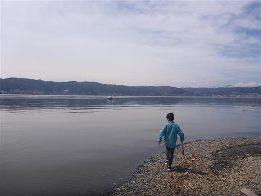
この諏訪湖間欠泉センター、昔は自噴していたのだが、力を失って機械で噴出させている。
その機械も現在故障中ということで、人工の噴出もなし。
長らく故障中で修理される気配もなく、このまま再開されないのかもしれない。
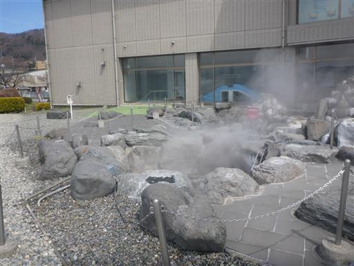
昼食は丸一で。
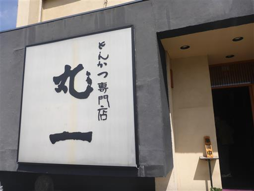
昼食をとったら霧ヶ峰に移動。
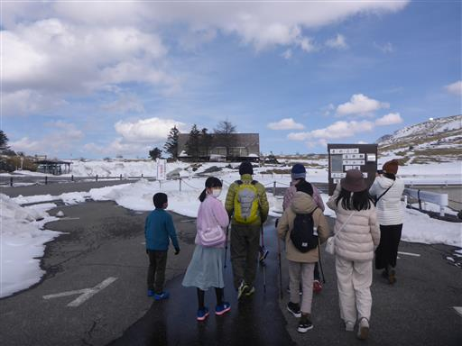
ここから車山まで少しの距離なのだが、今年は雪が多く登山道は完全に雪に覆われている。
計画立案時は車山まで歩く予定だったが、母親は足が悪くこの道を歩くのは困難なため断念。
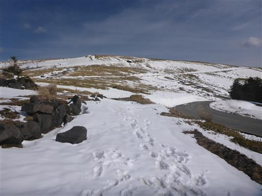
雪で遊び始める。
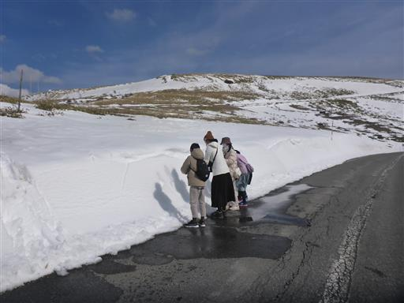
登山口はあまり展望のよさそうな場所もなかったので、富士見台まで車道を歩くことにする。
片道1.5km程度。車で行っても良いのだが、歩くのにちょうど良い距離だ。
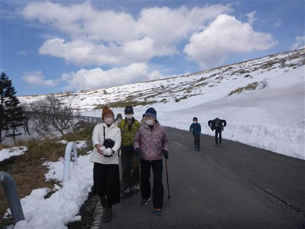
この先は通行止めのため、通る車はほとんどない。
眺めの良い車道を雪を投げて遊びながら、ゆっくりと歩いていく。
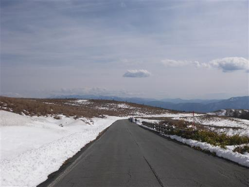
コーナーを曲がると富士見台が見え、背後に八ヶ岳が現れる。
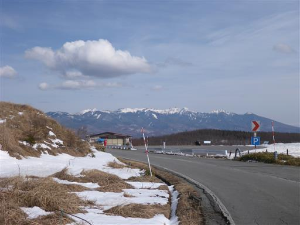
富士見台に到着。ほとんど誰もいない、静かな場所だ。
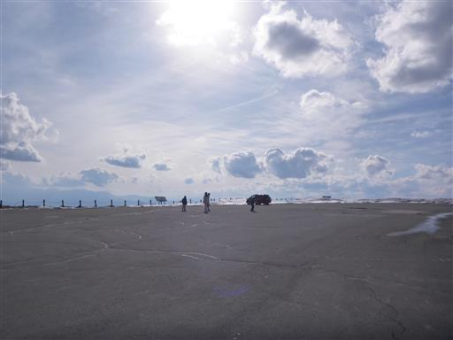
目の前に聳える八ヶ岳。
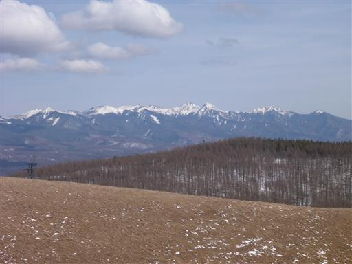
遠くには南アルプスの山々。
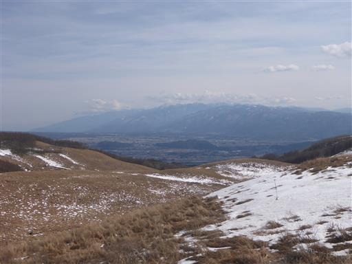
そして、その間からはこの地の名前の通り、富士山が望める。
素晴らしい展望台だ。
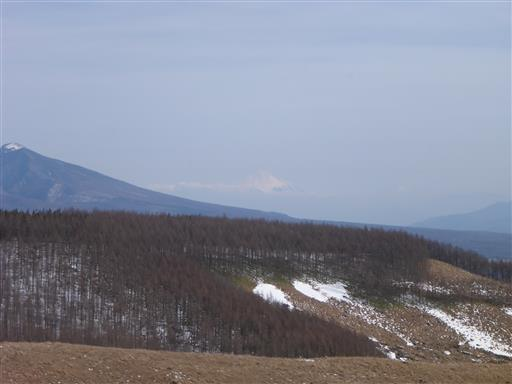
この先は通行止めになっている。
雪崩の影響らしいが、もうこの雪の量だと、どう考えても雪崩は発生しないだろう。
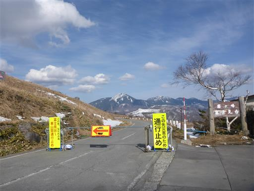
元来た道を引き返す。往復3km程度だ。
ここから宿がある白樺湖まですぐなのだが、車道が通行止めのため
大きく迂回して白樺湖に向かう必要がある。
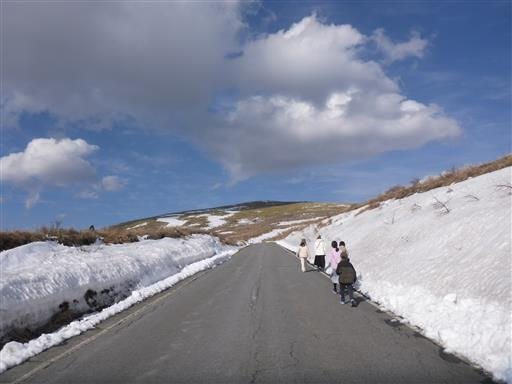
1時間ほど車を走らせ、白樺湖サンシャインロッジに到着する。
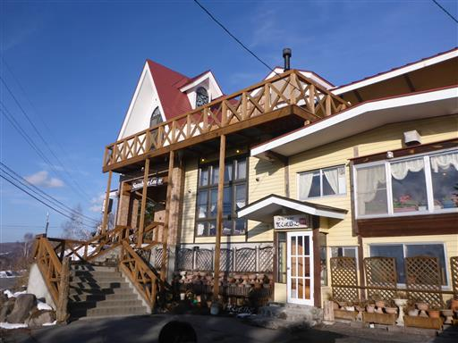
部屋は和洋室。子供たちにベッドは奪われてしまった。
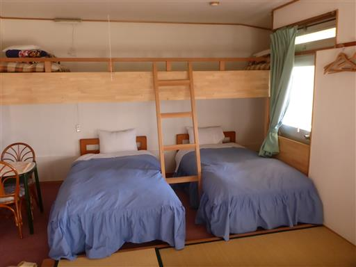
そこそこの安宿なのだが、館内は非常にきれいで快適。
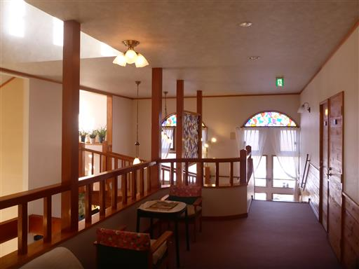
薪ストーブ。4月とはいえ、この地はまだまだ寒く、暖かい炎に癒される。
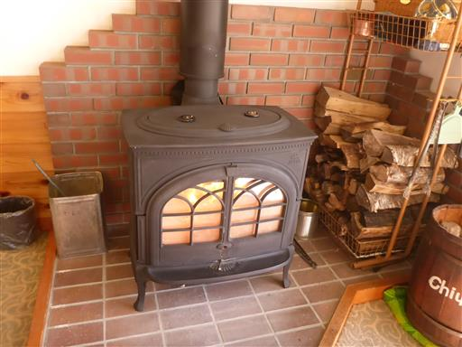
夜は家族で卓球をして遊ぶ。
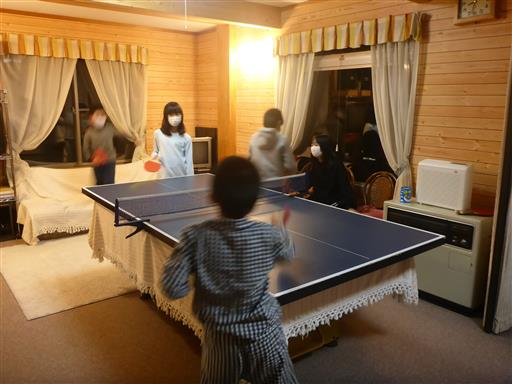